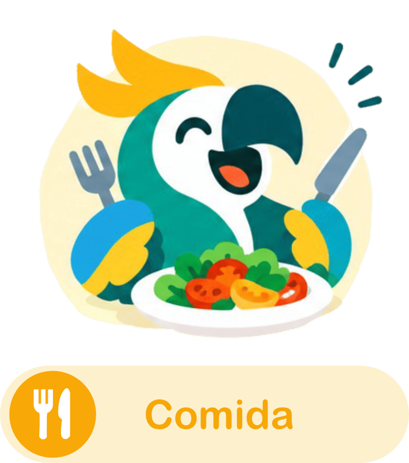

Unidad 1 - Saludos
Aprende a presentarte, saludar y mantener conversaciones básicas.
Comenza tus lecciones
Tu primer lección es Frases Básicas.
Aprende a presentarte, saludar y mantener conversaciones básicas.
En curso
Bloqueada
Bloqueada

Habla sobre tus comidas favoritas, restaurantes y hábitos alimenticios.
Aprendé a viajar, pedir direcciones y hablar sobre tus planes.
Mejora tu fluidez, expresiones útiles y comunicación cotidiana.